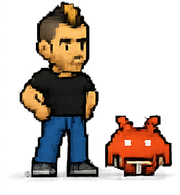
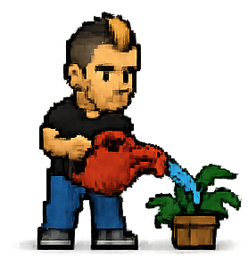
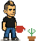
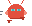
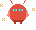
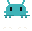
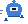
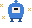

manu-bazos-cruzados.png
Manu, arms crossed — confidence, reassurance, ‘trust me on this’.
Internal
Pixel-art illustrations for use across the site and the blog. Each card shows the file name, a short description and its format/size — ask for one by file name or by theme (e.g. “idea”, “coffee”, “sleeping”) and it gets dropped into a post.
manu-bazos-cruzados.png
Manu, arms crossed — confidence, reassurance, ‘trust me on this’.

manu-bot.png
Manu next to a bot — automation, AI, working alongside the machines.
manu-cafe.png
Manu with a coffee — a relaxed moment, an intro, a casual aside.
manu-cafe.svg
Manu with a coffee — a relaxed moment, an intro, a casual aside.

manu-computer-2.png
Manu at a laptop — working on the move, a lighter technical moment.
manu-computer.png
Manu at a desktop computer — building, coding, technical work.

manu-con-bot.svg
Manu next to a bot — automation, AI, working alongside the machines.
manu-de-pie.svg
Manu standing, neutral pose — general-purpose, works almost anywhere.
manu-depie.png
Manu standing, neutral pose — general-purpose, works almost anywhere.
manu-durmiendo.png
Manu asleep — downtime, humour, ‘nothing urgent here’.

manu-idea.png
Manu with a lightbulb — an idea, a new approach, a realisation.
manu-idea.svg
Manu with a lightbulb — an idea, a new approach, a realisation.
manu-libro.png
Manu reading a book — research, learning, background reading.
manu-ordenador.svg
Manu at a desktop computer — building, coding, technical work.

manu-planta.png
Manu watering a plant — care, maintenance, looking after something over time.

manu-planta.svg
Manu watering a plant — care, maintenance, looking after something over time.

bot-blob-andando.svg
Round red bot with big eyes, walking. Good for a steady, in-progress moment.
bot-blob-corriendo.svg
Round red bot with big eyes, running. Good for urgency or speed.
bot-blob-durmiendo.svg
Round red bot with big eyes, asleep. Good for downtime or a low-priority note.

bot-blob-feliz.svg
Round red bot with big eyes, delighted. Good for good news or a completed task.
bot-blob-saltando.svg
Round red bot with big eyes, jumping. Good for excitement, a launch or a win.
bot-boxy-andando.svg
Yellow rectangular bot with a screen face, walking. Good for a steady, in-progress moment.
bot-boxy-corriendo.svg
Yellow rectangular bot with a screen face, running. Good for urgency or speed.
bot-boxy-durmiendo.svg
Yellow rectangular bot with a screen face, asleep. Good for downtime or a low-priority note.
bot-boxy-feliz.svg
Yellow rectangular bot with a screen face, delighted. Good for good news or a completed task.
bot-boxy-saltando.svg
Yellow rectangular bot with a screen face, jumping. Good for excitement, a launch or a win.
bot-invader-andando.svg
Teal space-invader-shaped bot, walking. Good for a steady, in-progress moment.
bot-invader-corriendo.svg
Teal space-invader-shaped bot, running. Good for urgency or speed.
bot-invader-durmiendo.svg
Teal space-invader-shaped bot, asleep. Good for downtime or a low-priority note.
bot-invader-feliz.svg
Teal space-invader-shaped bot, delighted. Good for good news or a completed task.

bot-invader-saltando.svg
Teal space-invader-shaped bot, jumping. Good for excitement, a launch or a win.

bot-torre-andando.svg
Blue rounded bot with one big square eye, walking. Good for a steady, in-progress moment.
bot-torre-corriendo.svg
Blue rounded bot with one big square eye, running. Good for urgency or speed.
bot-torre-durmiendo.svg
Blue rounded bot with one big square eye, asleep. Good for downtime or a low-priority note.

bot-torre-feliz.svg
Blue rounded bot with one big square eye, delighted. Good for good news or a completed task.
bot-torre-saltando.svg
Blue rounded bot with one big square eye, jumping. Good for excitement, a launch or a win.